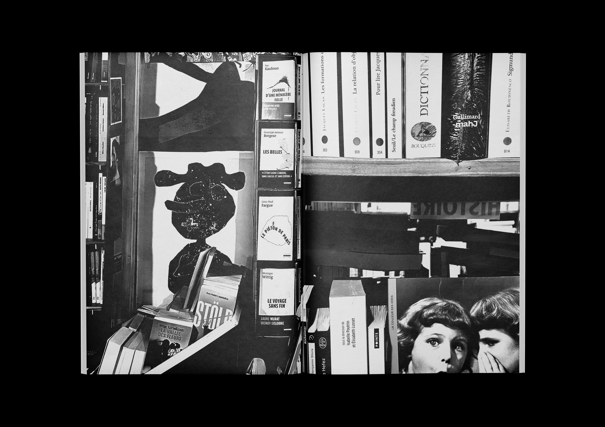
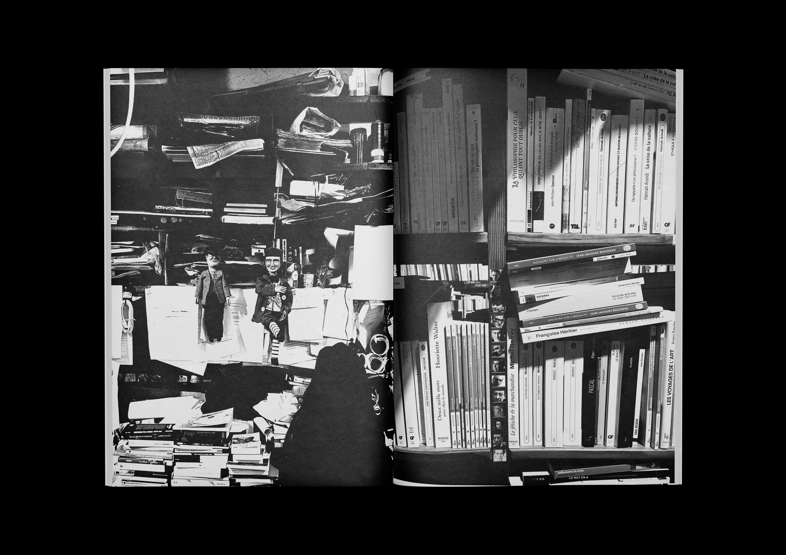
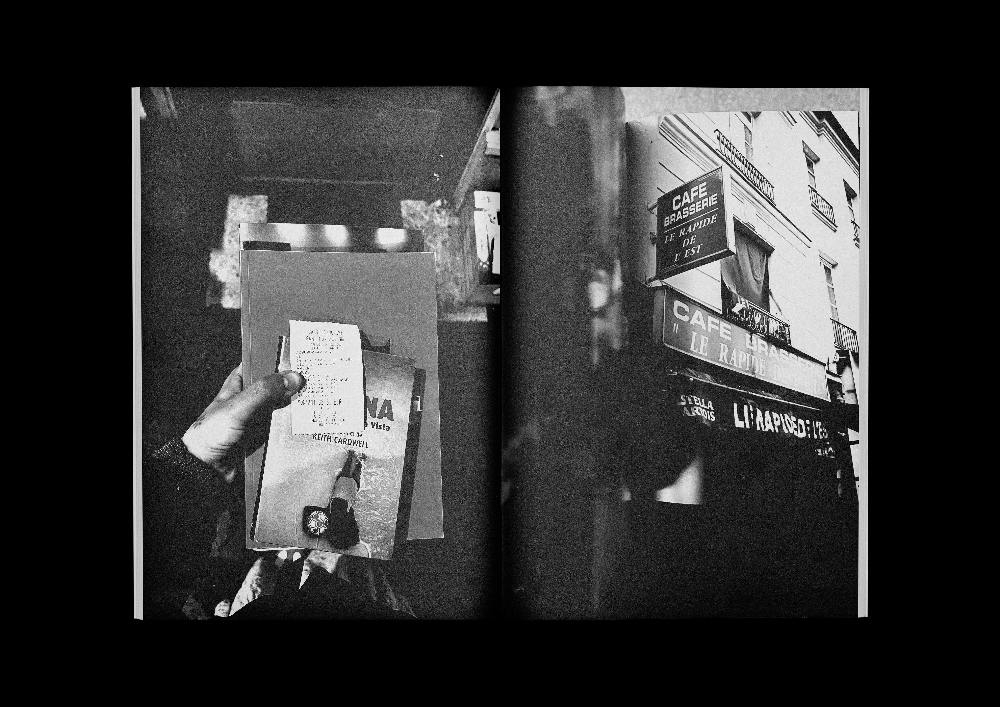
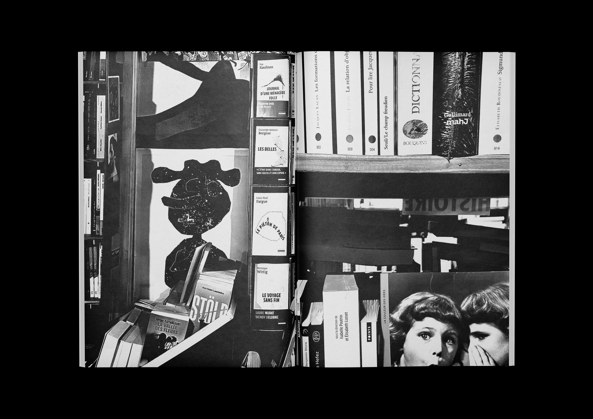
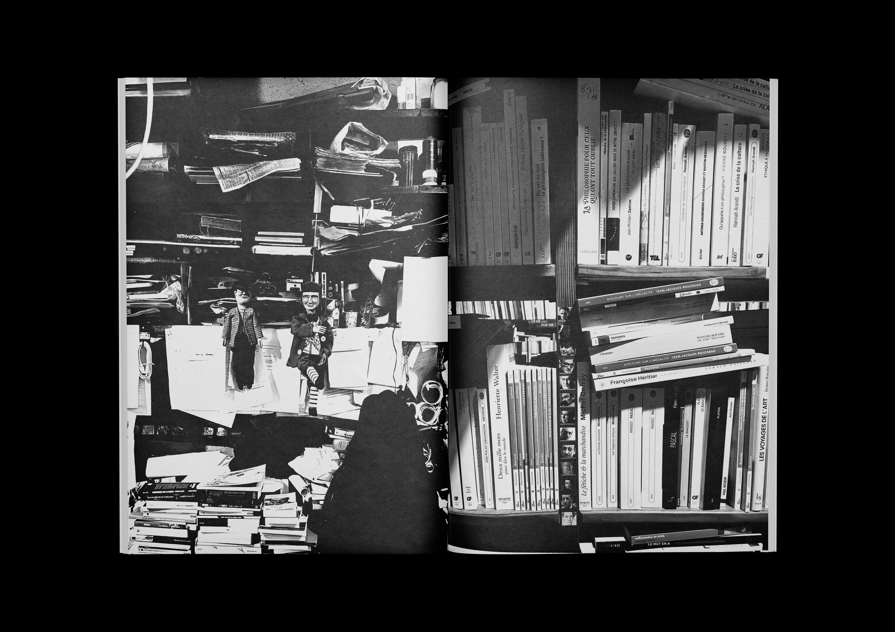
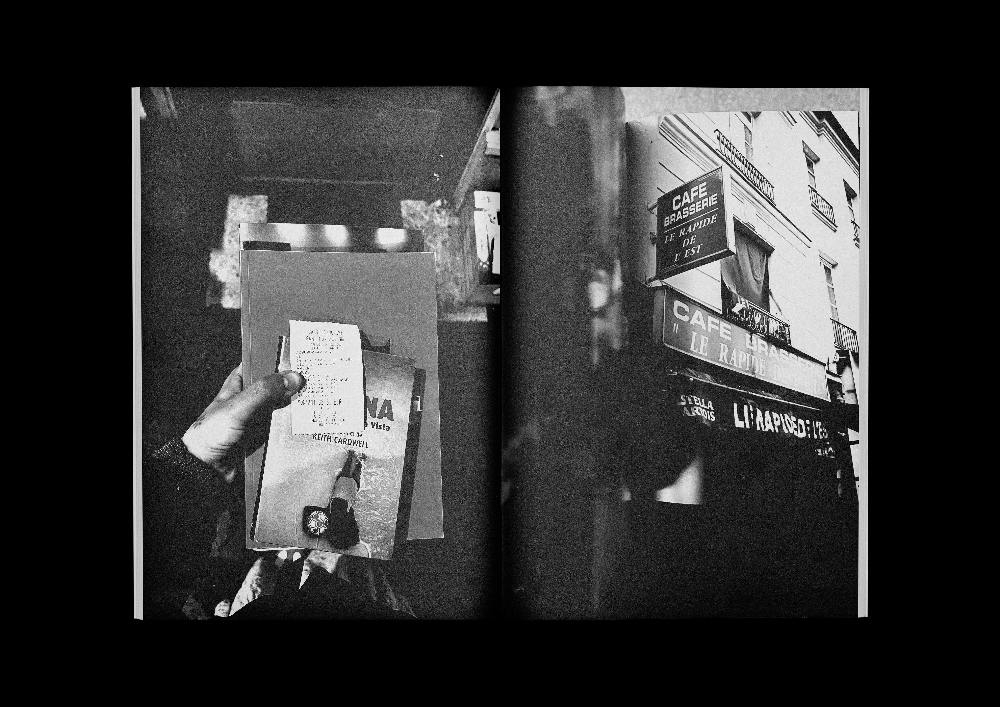

Reportage photographique sur la librairie indépendante amiénoise La Librairie du labyrinthe
24 x 33 cm
23 pages
Cette série de photographies s’intéresse à un lieu atypique et historique d’Amiens.
Cherchant à retranscrire un parcours, mêlant les échelles et les endroits, il s’agit de partager l’expérience au sein de la librairie qui porte bien son nom de “labyrinthe”.
Il s’agit aussi de mettre en lumière un lieu indépendant, politique et d’auto-édition qui propose un répertoire unique de livres des plus anciens aux récents, des plus étranges et rares.


 




